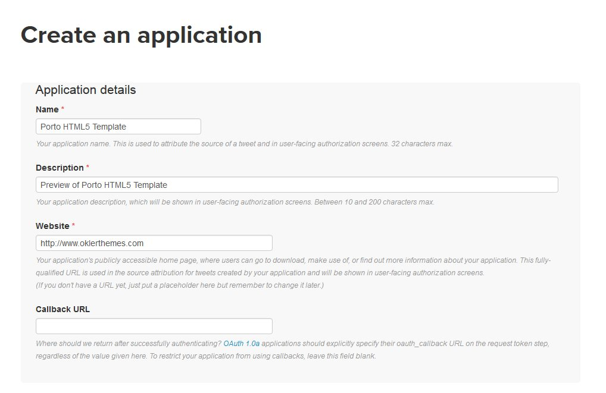
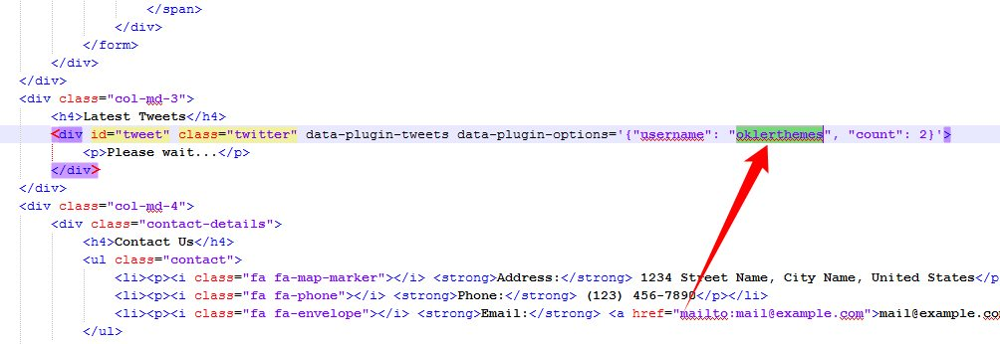

Tips
Files Structure
/ajax(Ajax files)-
/css(Template CSS) /demos(Demos CSSs)/fonts(Font Faces)-
/skinsdefault.css...(Create your own skin)
/img(All Images)-
/js(Template JS) /demos(JS to run in specific demos)/examples(JS to run specific features. I.E: Instafeed, Ajax, etc)/views(JS to run in specific pages. I.E: Contact Us)/master(You don't need to include that folder in your project, it has only the Style Switcher functions)/php(PHP Helpers - I.E: Contact Us form.)/vendor(All external libs. We keep all of them in this folder to make updates easily.)/video(All Videos)
Javascript
It's possible to change the JS settings by extending the defaults from the template, that way is so much easier to update the theme changing only one JS file.
Here are a few samples on how to do that:
Changing Settings
1) Changing the "scroll to top" icon: (js/custom.js)
$.extend(theme.PluginScrollToTop.defaults, {
iconClass: 'fas fa-chevron-up'
});
2) Changing the "appear animation" default duration: (js/custom.js)
$.extend(theme.PluginAnimate.defaults, {
duration: '500ms'
});
You can find all the defaults of the plugins and partials in the file js/theme.js as you can see here:
Changing Plugins Options
The template includes a very simple way to configure the elements that are initialized automatically, such as the sliders, you just need to put the settings in the "data-plugin-options" attribute, as you can see below:
<div class="slider" data-plugin-revolution-slider data-plugin-options="{'disableProgressBar': 'off'}">
It works the same way for most of the plugins included in the template: owlCarousel, Float Element, Twitter Feed, etc...
If you want to disable the auto initialization you can just add a class "manual" or remove the data-plugin-* attribute:
<div class="slider manual" id="myRevolutionSlider">
So now you can initialize that using the standard JS mode:
$(document).ready(function() {
$('#myRevolutionSlider').revolution({
delay:9000,
startwidth:960,
...
...
});
});
Remove/Disable a Plugin or Partial
If you want to remove/disable a plugin or partial that has a "initialize" function completely, follow this example: (js/custom.js)
theme.PluginScrollToTop.initialize = function() {};
You can find all the available plugins and partials in the file js/theme.init.js as you can see here:
Manually Initializing a Plugin
Some of the plugins/elements are initialized automatically, if you want to disabled that and call the plugin via Javascript, follow these steps:FROM (HTML):
<div class="owl-carousel" data-plugin-options="{'items': 6, 'loop': false, 'autoplay': true}">
TO (HTML):
<div class="owl-carousel manual" id="owl-example">(Javascript):
$(document).ready(function() {
$("#owl-example").owlCarousel({
items: 6,
loop: false,
autoplay: true
});
});
HTML Structure
The template is based on Bootstrap 4 Framework - http://getbootstrap.com
Bootstrap includes a responsive, mobile first fluid grid system that appropriately scales up to 12 columns as the device or viewport size increases.
<div class="row"> <div class="col-md-12"> Level 1 column <div class="row"> <div class="col-md-6">Level 2</div> <div class="col-md-6">Level 2</div> </div> </div> </div>
If you need more information, please visit this site: https://getbootstrap.com/docs/4.1/layout/grid/
CSS Structure
The organization of the CSS is one of our priorities.
These are the CSS file we're using in the template:
theme.css- (The basic layout structure styles)theme-elements.css- (Elements such as sliders, boxes, titles, etc...)custom.css(Add all customizations into this file)
CSS Helper Classes
Bootstrap Helpers
Bootstrap 4 comes with various utilities/helper classes. Access the link below to see all possibilities:
https://getbootstrap.com/docs/4.1/utilities/borders/Text Helpers
| Class | Description |
|---|---|
| .text-0 | Change text font-size |
| .text-1 | Change text font-size |
| .text-2 | Change text font-size |
| .text-3 | Change text font-size |
| .text-4 | Change text font-size |
| .text-5 | Change text font-size |
| .text-6 | Change text font-size |
| .text-7 | Change text font-size |
| .text-8 | Change text font-size |
| .text-9 | Change text font-size |
| .text-10 | Change text font-size |
| .line-height-1 | Change text line-height |
| .line-height-2 | Change text line-height |
| .line-height-3 | Change text line-height |
| .line-height-4 | Change text line-height |
| .line-height-5 | Change text line-height |
| .mobile-text-1 | Change text font-size based on window width (only for resolutions below 576px) |
| .mobile-text-2 | Change text font-size based on window width (only for resolutions below 576px) |
| .mobile-text-3 | Change text font-size based on window width (only for resolutions below 576px) |
| .mobile-text-4 | Change text font-size based on window width (only for resolutions below 576px) |
| .mobile-text-5 | Change text font-size based on window width (only for resolutions below 576px) |
| .font-weight-thin | Change text font-weight |
| .font-weight-light | Change text font-weight |
| .font-weight-normal | Change text font-weight |
| .font-weight-semibold | Change text font-weight |
| .font-weight-bold | Change text font-weight |
| .font-weight-extra-bold | Change text font-weight |
| .font-style-italic | Change text font-style |
| .font-primary | Change text font-family |
| .font-secondary | Change text font-family |
| .font-tertiary | Change text font-family |
| .font-quaternary | Change text font-family |
| .text-uppercase | Change text-transform |
| .text-lowercase | Change text-transform |
| .text-capitalize | Change text-transform |
| .text-underline | Change text-decoration |
| .text-line-trough | Change text-decoration |
| .text-color-default | Changes text color to the default color |
| .text-color-dark | Changes text color to the dark color |
| .text-color-light | Changes text color to the light color |
| .text-color-light-2 | Changes text color to the light color 2 |
| .text-color-light-3 | Changes text color to the light color 3 |
| .text-color-primary | Changes text color to the primary color |
| .text-color-secondary | Changes text color to the secondary color |
| .text-color-tertiary | Changes text color to the tertiary color |
| .text-color-quaternary | Changes text color to the primary color |
| .link-color-dark | Changes link color to the dark color |
| .link-color-light | Changes link color to the light color |
| .link-color-light-2 | Changes link color to the light color 2 |
| .link-color-light-3 | Changes link color to the light color 3 |
Others
| Class | Description |
|---|---|
| .pointer-events-none | Changes element pointer-events to none |
| .scale-1 | Changes element transform scale |
| .scale-2 | Changes element transform scale |
| .scale-3 | Changes element transform scale |
| .transform-center-x | Center the element at horizontal axis (Recommended use in elements with position absolute) |
| .transform-center-y | Center the element at vertical axis (Recommended use in elements with position absolute) |
| .transform-center-xy | Center the element at horizontal and vertical axis (Recommended use in elements with position absolute) |
| .overflow-hidden | Changes element overflow |
| .overflow-visible | Changes element overflow |
| .overflow-scroll | Changes element overflow |
| .va-middle | Changes vertical-align to middle |
| .ws-nowrap | Changes white-space to nowrap |
| .ws-normal | Changes white-space to normal |
| .z-index-0 | Changes z-index to 0 |
| .z-index-1 | Changes z-index to 1 |
| .z-index-2 | Changes z-index to 2 |
| .z-index-3 | Changes z-index to 3 |
| .box-shadow-none | Changes box-shadow to none |
| .no-vertical-scroll | Remove vertical scroll |
| .no-horizontal-scroll | Remove horizontal scroll |
| .bg-transparent | Changes background color to transparent |
| .bg-light | Changes background color to light level 0 |
| .bg-light-1 | Changes background color to light level 1 |
| .bg-light-2 | Changes background color to light level 2 |
| .bg-light-3 | Changes background color to light level 3 |
| .bg-light-4 | Changes background color to light level 4 |
| .bg-light-5 | Changes background color to light level 5 |
| .bg-dark | Changes background color to dark level 0 |
| .bg-dark-1 | Changes background color to dark level 1 |
| .bg-dark-2 | Changes background color to dark level 2 |
| .bg-dark-3 | Changes background color to dark level 3 |
| .bg-dark-4 | Changes background color to dark level 4 |
| .bg-dark-5 | Changes background color to dark level 5 |
| .bg-primary-1 | Changes background color to primary level 1 |
| .bg-primary-2 | Changes background color to primary level 2 |
| .bg-primary-3 | Changes background color to primary level 3 |
| .bg-primary-4 | Changes background color to primary level 4 |
| .bg-primary | Changes background color to primary level 0 |
| .bg-primary-6 | Changes background color to primary level 6 |
| .bg-primary-7 | Changes background color to primary level 7 |
| .bg-primary-8 | Changes background color to primary level 8 |
| .bg-primary-9 | Changes background color to primary level 9 |
| .bg-secondary-1 | Changes background color to secondary level 1 |
| .bg-secondary-2 | Changes background color to secondary level 2 |
| .bg-secondary-3 | Changes background color to secondary level 3 |
| .bg-secondary-4 | Changes background color to secondary level 4 |
| .bg-secondary | Changes background color to secondary level 0 |
| .bg-secondary-6 | Changes background color to secondary level 6 |
| .bg-secondary-7 | Changes background color to secondary level 7 |
| .bg-secondary-8 | Changes background color to secondary level 8 |
| .bg-secondary-9 | Changes background color to secondary level 9 |
| .bg-tertiary-1 | Changes background color to tertiary level 1 |
| .bg-tertiary-2 | Changes background color to tertiary level 2 |
| .bg-tertiary-3 | Changes background color to tertiary level 3 |
| .bg-tertiary-4 | Changes background color to tertiary level 4 |
| .bg-tertiary | Changes background color to tertiary level 0 |
| .bg-tertiary-6 | Changes background color to tertiary level 6 |
| .bg-tertiary-7 | Changes background color to tertiary level 7 |
| .bg-tertiary-8 | Changes background color to tertiary level 8 |
| .bg-tertiary-9 | Changes background color to tertiary level 9 |
| .bg-quaternary-1 | Changes background color to quaternary level 1 |
| .bg-quaternary-2 | Changes background color to quaternary level 2 |
| .bg-quaternary-3 | Changes background color to quaternary level 3 |
| .bg-quaternary-4 | Changes background color to quaternary level 4 |
| .bg-quaternary | Changes background color to quaternary level 0 |
| .bg-quaternary-6 | Changes background color to quaternary level 6 |
| .bg-quaternary-7 | Changes background color to quaternary level 7 |
| .bg-quaternary-8 | Changes background color to quaternary level 8 |
| .bg-quaternary-9 | Changes background color to quaternary level 9 |
| .border-grey | Changes border color to grey |
| .border-light | Changes border color to light level 0 |
| .border-light-1 | Changes border color to light level 1 |
| .border-light-2 | Changes border color to light level 2 |
| .border-light-3 | Changes border color to light level 3 |
| .border-light-4 | Changes border color to light level 4 |
| .border-light-5 | Changes border color to light level 5 |
| .border-dark | Changes border color to dark level 0 |
| .border-dark-1 | Changes border color to dark level 1 |
| .border-dark-2 | Changes border color to dark level 2 |
| .border-dark-3 | Changes border color to dark level 3 |
| .border-dark-4 | Changes border color to dark level 4 |
| .border-dark-5 | Changes border color to dark level 5 |
| .border-color-primary | Changes border color to primary |
| .border-color-secondary | Changes border color to secondary |
| .border-color-tertiary | Changes border color to tertiary |
| .border-color-quaternary | Changes border color to quaternary |
Customization & Styles
Colors
The style switcher was made to support unlimited skin colors, for that we use Less (http://www.lesscss.org/) to process the CSS dinamically in the demo and show the color right away.
You don't need to use LESS in your project, after you done customizing your skin you may want to grab the generated code and save it in a file in the folder: /css/skins/(skin-name).css
Learn More: How to change the Skin
Layout Style (Normal/Boxed/Gap Outside)
The template has three different layout modes, Wide, Boxed and Gap Outside. The wide one is the default option, if you want to use the Boxed or Gap Outside version, add the following classes in the <html>:
<html class="boxed"> or <html class="gap-outside">
You can also customize the background color or image.
Background Color (Light/Dark)
The template has two different background colors, Light and Dark. The light one is the default option, if you want to use the Dark version, add the following class in the <html>:
<html class="dark">
Note that if you have sections with light background classes attached, you will need change those classes for dark. For example: .bg-light to .bg-dark
Fonts
To change the embedded font, please take a look in the head part of the website and you will find this tag:
<link href="https://fonts.googleapis.com/css?family=Montserrat:100,300,400,500,600,700,900|Open+Sans:300,400,600,700,800" rel="stylesheet" type="text/css">To change the font, first go to https://fonts.google.com/ choose a font and use the generated code.
Skin
You can generate your own skin color:
Copy that and save as a css skin file (css/skins/default.css)
RTL
To activate the RTL mode please follow the steps:
1) Add the "dir" attribute in the HTML tag:
2) Copy all the files from the folder:
HTML/master/rtl/css to the default css folder HTML/css.3) Add the "rtl-" prefix in the files:
Icons
Font Awesome is a @font-face iconset that you can change size and color of the icons using CSS.
If you need more information, please visit this site: http://fontawesome.io/
<i class="fas fa-edit"></i> <i class="fas fa-search"></i> ...
Icons - Animated
EZY comes with a plugin to animate SVG icons.
Note that it's necessary identify if the SVG uses stroke or not. See the examples below:
Use the code below if the SVG icon isn't stroke based:
<object width="42" data="vendor/linear-icons/screen.svg" type="image/svg+xml" data-icon data-plugin-options="{'color': '#2388ED', 'animated': true, 'delay': 600}"></object>
Use the code below if the SVG icon is stroke based:
<object width="44" data="vendor/linea-icons/software/software_layers2.svg" type="image/svg+xml" data-icon data-plugin-options="{'color': '#2388ED', 'animated': true, 'delay': 600, 'strokeBased': true, 'svgStyle': 'stroke-width: 3'}"></object>
* All SVG icons inside the folder vendor/linear-icons/ aren't stroke based
* All SVG icons inside the folder vendor/linea-icons/ are stroke based
The plugin is driven by vivus.js: https://github.com/maxwellito/vivus
Lightbox
The lightbox is driven by Magnific Popup script.
Here's an example of usage:
<a class="img-thumbnail lightbox" title="Open Lightbox" href="img/projects/project-4.jpg" data-plugin-options='{"type":"image"}'>
<img class="img-responsive" src="img/projects/project-4.jpg">
</a>
For more information check the documentation.
Video Background
The video background are driven by the Vide Plugin - https://github.com/VodkaBears/Vide
Here's an example of usage:
<section class="video py-5" data-video-path="video/office" data-plugin-video-background data-plugin-options='{"posterType": "jpg", "position": "50% 50%"}'></section>
Prepare your video in several formats like '.webm', '.mp4' for cross browser compatability, also add a poster with .jpg, .png or .gif extension and set in the attribute data-video-path.
Twitter Feed
1) Open up the HTML files and put your twitter username.2) Go to: https://apps.twitter.com/
3) Click on "Create new APP":

4) Enter the information about your website:


5) Click in the API Keys tab and in the button "Create my access token":
 (Wait 1 minute and refresh the page)
6) Get the keys and put in the file: php/twitter-feed.php:

Instagram Feed
1) Access http://www.instagram.com/developers. Log in into your Instagram account and click on button "Register Your Application".
1.1) If you already have a Instagram Developer account skip this item. If not fill the form to create a Instagram Developer account.
2) Click on button "Register a New Client"
3) Fill the form with your data and click on button "Register".
4) Click on button "Manage"
5) Click on tab "Security". Uncheck the "Disable implicit OAuth" and click on button "Update Client".
6) Open a browser new tab and access that URL: https://www.instagram.com/oauth/authorize/?client_id=PUT_YOUR_CLIENT_ID_HERE&redirect_uri=YOUR_REDIRECT_URL&response_type=token
Change "PUT_YOUR_CLIENT_ID" by your CLIENT_ID. Change "YOUR_REDIRECT_URL" by your website URL. Click on button "Authorize". 
7) Instagram will redirect to a link with access token. Save that access token code generated.
8) Call/reference the Instafeed plugin on page that you want. Like this code below:
9) Add the script "examples.instafeed.js" on footer of document. Like this code below:
10) Choose between the four types of Instagram Feed below and add in your website:
<div id="instafeedBasic"></div> or <div id="instafeedLightbox"></div> or <div id="instafeedCarousel"></div> or <div id="instafeedNoMargins"></div>
Google Maps
Usage of the Google Maps APIs requires a key. If you are using the Google Maps API it will require a key going forward.
1) Get an API key: https://developers.google.com/maps/documentation/javascript/get-api-key
2) Add the API key in the HTML (Script)

<script src="https://maps.googleapis.com/maps/api/js?key=YOUR_API_KEY"></script>
3) Configure the map location. For example, using as base the file contact-us-1.html:
METHOD 1:
Open the file using a text editor and go to the bottom of document. You will see the javascript code below:
Change the address in the markers array.
METHOD 2:
If you want to set the locations using Latitude and Longitude:
Replace the JS script in the HTML to this one:
// Map Markers
var mapMarkers = [{
latitude: 30.44792,
longitude: -86.72963,
html: "<strong>Alabama Office</strong><br>217 Summit Boulevard, Birmingham, AL 35243",
icon: {
image: "img/pin.png",
iconsize: [26, 46],
iconanchor: [12, 46]
}
},{
latitude: 31.44792,
longitude: -86.72963,
html: "<strong>California Office</strong><br>645 E. Shaw Avenue, Fresno, CA 93710",
icon: {
image: "img/pin.png",
iconsize: [26, 46],
iconanchor: [12, 46]
}
},{
latitude: 33.44792,
longitude: -86.72963,
html: "<strong>New York Office</strong><br>New York, NY 10017",
icon: {
image: "img/pin.png",
iconsize: [26, 46],
iconanchor: [12, 46]
}
}];
// Map Initial Location
var initLatitude = 40.75198;
var initLongitude = -73.96978;
Here’s a good website to find the coordinates of your address: http://universimmedia.pagesperso-orange.fr/geo/loc.htm
Contact Form
1) HTML:
<form class="contact-form form-style-2" action="php/contact-form.php" method="POST"> <div class="contact-form-success alert alert-success d-none"> <strong>Success!</strong> Your message has been sent to us. </div> <div class="contact-form-error alert alert-danger d-none"> <strong>Error!</strong> There was an error sending your message. <span class="mail-error-message d-block"></span> </div> <div class="form-row"> <div class="form-group col-md-6"> <input type="text" value="" data-msg-required="Please enter your name." maxlength="100" class="form-control" name="name" id="name" placeholder="Name" required> </div> <div class="form-group col-md-6"> <input type="email" value="" data-msg-required="Please enter your email address." data-msg-email="Please enter a valid email address." maxlength="100" class="form-control" name="email" id="email" placeholder="E-mail" required> </div> </div> <div class="form-row"> <div class="form-group col"> <input type="text" value="" data-msg-required="Please enter the subject." maxlength="100" class="form-control" name="subject" id="subject" placeholder="Subject" required> </div> </div> <div class="form-row"> <div class="form-group col"> <textarea maxlength="5000" data-msg-required="Please enter your message." rows="5" class="form-control" name="message" id="message" placeholder="Message" required></textarea> </div> </div> <div class="form-row mt-2"> <div class="col"> <input type="submit" value="SEND MESSAGE" class="btn btn-primary btn-rounded btn-4 font-weight-semibold text-0" data-loading-text="Loading..."> </div> </div> </form>
2) Make sure that you have the jQuery Validate plugin included on document:
3) Add the script "view.contact.js" on footer of document. Like the image below:
4) In php/contact-form.php change the value of variable $email to your email (the email that will receive contacts)
4.1) OPTIONAL: You can easily change the label text of each field. For example, to change "Email" for "Email Address" just uncomment the code like on image below:
Contact form is not working ?
Try the solution on this link: http://www.okler.net/forums/topic/important-contact-form-is-not-working/
Contact Form receiving blank emails / {"response":"success"}
Make sure that you made the step 3 of tutorial above.
Contact Form - Thank you page
To redirect for a "Thank You" page when contact form is sent, just uncomment the code below at js/views/view.contact.js:
Google Recaptcha
1) For adding reCAPTCHA to your site, you need to register your site and get reCAPTCHA API keys.
Register your site at Google from here – https://www.google.com/recaptcha/admin
2) Get your Site Key.
Site key is used to display the reCAPTCHA widget.
The code is in the pattern of the image below
3) Get your Secret Key.
Secret key helps authorizes communication between your site and the reCAPTCHA server.
The code is in the pattern of the image below
4) HTML:
Change "YOUR_RECAPTCHA_SITE_KEY" by your generated Google Recaptcha site key.
<form class="contact-form" action="php/contact-form-recaptcha.php" method="POST"> <div class="contact-form-success alert alert-success d-none"> <strong>Success!</strong> Your message has been sent to us. </div> <div class="contact-form-error alert alert-danger d-none"> <strong>Error!</strong> There was an error sending your message. <span class="mail-error-message d-block"></span> </div> <div class="form-row"> <div class="form-group col-md-6"> <input type="text" value="" data-msg-required="Please enter your name." maxlength="100" class="form-control" name="name" id="name" placeholder="Name" required> </div> <div class="form-group col-md-6"> <input type="email" value="" data-msg-required="Please enter your email address." data-msg-email="Please enter a valid email address." maxlength="100" class="form-control" name="email" id="email" placeholder="E-mail" required> </div> </div> <div class="form-row"> <div class="form-group col"> <input type="text" value="" data-msg-required="Please enter the subject." maxlength="100" class="form-control" name="subject" id="subject" placeholder="Subject" required> </div> </div> <div class="form-row"> <div class="form-group col"> <textarea maxlength="5000" data-msg-required="Please enter your message." rows="5" class="form-control" name="message" id="message" placeholder="Message" required></textarea> </div> </div> <div class="form-row mt-2"> <div class="form-group col"> <div class="g-recaptcha" data-sitekey="YOUR_RECAPTCHA_SITE_KEY"></div> </div> </div> <div class="form-row mt-2"> <div class="form-group col"> <input type="submit" value="SEND MESSAGE" class="btn btn-primary btn-rounded btn-4 font-weight-semibold text-0" data-loading-text="Loading..."> </div> </div> </form>
5) Make sure that you have the jQuery Validate plugin included on document:
6) Add the script "view.contact.js" on footer of document. Like the image below:
7) Add the script of Google Recaptcha on footer of document. Like the image below:
8) In php/contact-form-recaptcha.php change the value of variable $secret to your generated Google Recaptcha Secret Key
9) In php/contact-form-recaptcha.php change the value of variable $email to your email (the email that will receive contacts)
Effects
You can add some Animations / Transitions to the elements which fires when an element scrolls into view, it's pretty simple to use and you can add it in any element.
EZY comes with "animate.css" library. So you can use all animations listed here: https://daneden.github.io/animate.css/
For example the fadeIn effect:
<div data-appear-animation="fadeIn" data-appear-animation-delay="200"> ... </div>
Heads up: The Attribute data-appear-animation-delay is Optional and is set in Miliseconds.
We also created custom animations for EZY:
- maskUp
- maskRight
- maskDown
- maskLeft
- fadeInUpShorter
- fadeInLeftShorter
- fadeInRightShorter
- fadeInDownShorter
- expandIn
- blurIn
Credits
- animate.css (https://daneden.github.io/animate.css/)
- Animated Headlines (https://codyhouse.co/demo/animated-headlines/index.html)
- Bootpag (http://botmonster.com/jquery-bootpag/)
- Bootstrap (https://getbootstrap.com)
- Bootstrap Datepicker (https://github.com/uxsolutions/bootstrap-datepicker)
- Count To (https://github.com/mhuggins/jquery-countTo)
- Easy Pie Chart (https://github.com/rendro/easy-pie-chart)
- Font Awesome (https://fontawesome.com/)
- Instafeed (http://instafeedjs.com/)
- Isotope (https://isotope.metafizzy.co)
- jQuery (http://jquery.com/)
- jQuery Appear (https://github.com/bas2k/jquery.appear/)
- jQuery Browser Mobile (http://detectmobilebrowser.com/)
- jQuery Cookie (https://github.com/carhartl/jquery-cookie)
- jQuery Countdown (http://hilios.github.io/jQuery.countdown/)
- jQuery Easing (http://gsgd.co.uk/sandbox/jquery/easing/)
- jQuery gMap (http://github.com/marioestrada/jQuery-gMap)
- jQuery Hover3d (http://github.com/ariona/hover3d)
- jQuery Lazy Load (http://www.appelsiini.net/projects/lazyload)
- jQuery Validation (https://jqueryvalidation.org/)
- Linea Icons (http://linea.io/)
- Linear Icons (https://linearicons.com/)
- Magnific Popup (http://dimsemenov.com/plugins/magnific-popup/)
- Modernizr (https://modernizr.com)
- Nano Scroller (http://jamesflorentino.github.com/nanoScrollerJS/)
- noUiSlider (https://refreshless.com/nouislider/)
- Owl Carousel (https://owlcarousel2.github.io/OwlCarousel2/)
- Revolution Slider jQuery (https://revolution.themepunch.com/jquery/)
- Simple Line Icons (http://simplelineicons.com/)
- Vide (http://vodkabears.github.io/vide/)
- Vivus (https://github.com/maxwellito/vivus)
- Visible (https://github.com/customd/jquery-visible/blob/master/jquery.visible.js)
- AfterResize (https://github.com/mcshaman/afterResize.js)
- WaitForImages (https://github.com/alexanderdickson/waitForImages)
- Sticky-kit (http://leafo.net/sticky-kit/)